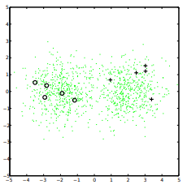

GMM as an example:
\begin{align}
\log & p(X_l, Y_l, X_u|\theta) = \\
& \sum^l_{i=1} \log p(y_i|\theta)p(x_i|y_i,\theta) + \\
& \sum^{l+u}_{l+1}log \left(\sum_{y=1}^c p(y|\theta)p(x_i|y,\theta) \right)
\end{align}

Clear, effective of model is close to correct, unlabeled data hurt if generative model is wrong